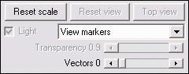
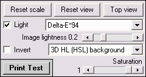
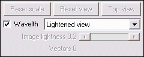
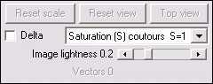
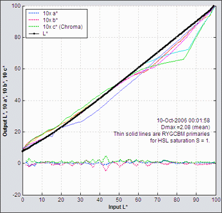
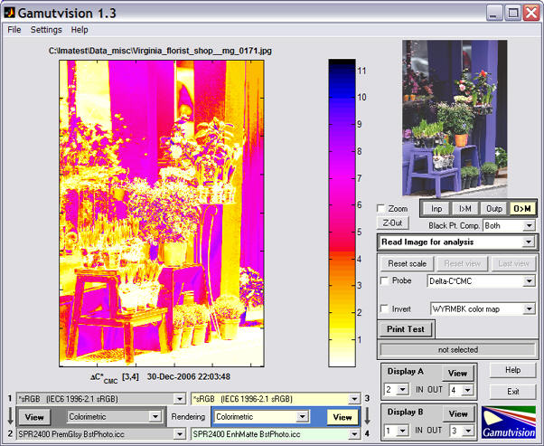
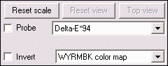
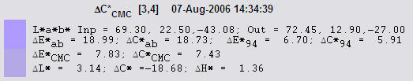

2D a*b* Gamut map (S = 1)
Plotted on the CIELAB a*b* plane for L(HSL) = {0.1, 0.3, 0.5, 0.7, 0.9} with maximum saturation (S = 1). The petal-like dotted concentric curves are the twelve loci of constant hue, representing the six primary hues (R, Y, G, C, B, M) and the six hues halfway between them. They follow different curves above and below L = 0.5.
Display options are shared with the 2D L*a*b* saturation map (below).

- resets the plot scale for the current plot: it is enlarged whenever large gamut color spaces are displayed.
- The popup menu controls the display. Markers (circles indicating 12 evenly spaced colors, including R, Y, G, C, B, and M) can be switched on an off. The 2D a*b* Saturation map (below) can be displayed with light lines on a dark background.
- Vectors connecting the with the output colors appear when the Vectors slider is between 0.02 and 0.98 (representing the input L(HSL) for the 2D Gamut map (above) or input S(HSL) for the 2D Saturation map (below)).
2D a*b* Saturation map
Plotted on the CIELAB a*b* plane for saturation S(HSL) = {0, 0.2, 0.4, 0.6, 0.8, 1.0}.
The default value of L(HSL) = 0.5 is the middle lightness level where hues reach their greatest saturation, e.g., pure red [255,0,0], green [0,255,0], and blue [0,0,255] all have L(HSL) = 0.5. L(HSL) may be varied between 0.05 and 0.95 using the HSL Lightness (L) slider at the bottom of the display options area. It can be reset to its default value of 0.5 by pressing the button.
The 2D a*b* saturation map and color difference map (below) are the best displays for visualizing printer gamut as a function of Saturation S: At low S-values the output (solid lines) tracks the input (dotted lines), but the output clips strongly when S reaches its limits: around 0.4 in the green and blue-magenta regions. This plot is especially valuable for comparing rendering intents, which don't behave as the textbooks indicate.
Note that the value of S at clipping depends on the input color space: the larger the color space gamut, the more saturated the colors corresponding to S, i.e., the larger the chrominance (c* = (a*2 + b*2 )1/2 ).
Despite its evident limitations, the Epson R2400 is an excellent pigment-based printer.
2D a*b* color difference
Similar to the above 2D a*b* saturation map except that it displays color differences.
The Display options are the HSL Lightness (L) slider, , , and a popup menu for selecting the Color difference metric. Choices include ΔE*ab, ΔC*ab, ΔE*94, ΔC*94, ΔE*CMC, ΔC*CMC, ΔL*, ΔChroma, ΔHue angle, and Δ|Hue distance|, L* (input), L* (output), chroma (input), and Chroma (output). (The last four are not actually differences.) Color difference metrics are described in Gamutvision equations.
3D/2D HL Color difference plots
Plots color differences using H and L (from HSL) or h* and L* (from CIELAB L*a*b* transformed to L*c*h*) as the independent axis. S = 1 (the gamut boundary) is the default, but S can be set to values less than 1 to display color differences inside the gamut boundary. The image on the right is the 3D ΔE*94 color difference for S = 1 displayed on the HL (from HSL) plane.
Display options
- turns on lighting to highlight the color difference surface texture. The light rotates when the diagram is rotated. It is reset by pressing .
- The popup menu to the right of Light selects the color difference metric. Choices are the same as the 2D a*b* color difference, above.
- (slider) sets image lightness. Darker (< 0.3) is best for 3D plots; lighter (0.3 - 0.7) is best for 2D plots to keep contours visible.
- (3D plots only) inverts the display. Useful for Chroma difference, which is mostly negative.
- The popup menu to the right of Invert selects the display type.
3D HL(HSL) independent axis (right)
2D HL (HSL) independent axis (below, left)
2D h*L* (L*c*h*) independent axis (below, middle)
3D h*L* (L*c*h*) independent axis (below, right)
All four displays contain the same information, presented differently. - Saturation (slider) selects the pattern saturation (S in HSL color representation). The default value of 1 displays the gamut boundary. Smaller values (<1) display the interior of the gamut volume. This feature makes is possible to view rare profile defects that appear inside the gamut volume but not on the surface. Saturation is reset to 1 when Print Test is run.



The independent axis of these plots is either HL (HSL) (above left; used to generate the plots), or h*L* (L*c*h*) (above middle and right), where c* and h* are derived from a* and b* by a rectangular-to-polar transformation: c* = chroma = (a*2 + b*2)1/2 ; h* = hue angle = 180/π arctan(b*/a*). Note that L* (from L*c*h*) is distorted with respect to L (from HSL). That's because L* is luminance; yellows and greens are increased and blues are decreased from their corresponding L (HSL) values. HSL and L*a*b* hues are also slightly different.
2D CIE 1931 xy saturation map
Plotted on the xy plane for L(HSL) = 0.5 with saturation S = {0, 0.2, 0.4, 0.6, 0.8, 1.0}. A D50 (5000K) white point is implied.
The CIE 1931 chromaticity diagram is explained in the Wikipedia and in EFG's Chromaticity Diagrams Lab Report.
Display options are shared with the u'v' saturation map (below).

- The popup menu allows you to select several view options.
Lightened view | Normal (saturated) view
Lightened/gamut boundaries | Normal/gamut boundaries
Lightened view (shown on the right) enhances the visibility gamut lines.
Normal view (shown in the u'v' diagram, below) is about as close as it's possible to get to the actual colors of the chromaticity diagrams on a monitor, which has a gamut comparable to sRGB.
Gamut boundaries means display only gamut boundaries to reduce clutter. Otherwise, display gamuts for saturation S = {0, 0.2, 0.4, 0.6, 0.8, 1.0}.
- Wavelth: selects spectrum locus wavelength display. The wavelengths in nanometers can be displayed (u'v' plot, on the right) or omitted (xy plot, above).
2D CIE u'v' saturation map
The CIE u'v' plane is a transformation of the xy plane with improved perceptual uniformity. It is less familiar than the CIE 1931 xy plot, but still widely used. A D50 (5000K) white point is used.
HSL contour plots
Several HSL (Hue-Saturation-Lightness) contour plots can be displayed. HSL color representation is device-dependent , i.e., the values depend on the color space. Although HSL results are of interest because the original patterns are generated using HSL, the newer 2D/3D HL color difference plots (above) are preferred.
Display options allow you to choose between
- H (Hue), S (Saturation), and L (Lightness) contours
- Pattern with maximum saturation (S = 1 for 0 ≤ L ≤ 1) or saturation from minimum to maximum ( L = 0.5 for S from 0 to 1)
- Checking allows selects the difference (Δ) between output and input levels.
The plot on the right shows the change in HSL Saturation (ΔS) between the input and output for the maximum saturation (S = 1) pattern. Weaknesses in green and blue-magenta saturation for lighter portions of the test image (L > 0.5) are apparent, as they are in several of the previous displays.

Black & White density response:
These curves plot the grayscale output vs. input. The fourth plot also plots the CIELAB L* values of primary colors. These are the best displays for observing the effects of Black point compensation.
Display options contains a single popup menu with four selections.
- Density vs. Log pixels (log-log scale); Shown on the right, above. "Density" is Output density. Input density is not referenced. The average slope of the Output density curve (slightly greater than 2) is the gamma of the output device.
- Output vs. input density (log-log scale); similar to the traditional characteristic curve for film (the Hurter & Driffield D-Log E curve).
- Output luminance vs. input luminance (linear scale)
- CIELAB Output L*, a*, b*, and c* (chroma) vs. input L*. Shown on the right, below. Chroma = c* = (a2 + b2)1/2 is the deviation from neutral gray: a valuable measure of B&W printing performance. The Saturation slider is active for this display.
This plot displays several results. – Output vs. input L* for the gray region is diaplayed as a black line with dots (•) that normally looks like a thick black line. – a*, b*, and chroma (a2+b2)1/2 of the gray region are displayed as dotted blue, red, and green lines (multiplied by a factor of 10). These curves illustrate the deviation from neutral gray. They would be close to 0 for an ideal profile. – The Output vs. input L* response for the primary colors (R, Y, G, C, B, and M) is shown as solid lines. The saturation for these colors (S(HSL)) is set by the Saturation slider. This display is used to advantage in Profile mystery: The case of the smudged pines.
Output density vs. Log pixels
Output vs. Input L* a* b* c*
Image color analysis display
This display, opened by clicking Read image for analysis in the Display selection box, shows the perceptual color difference of an image before and after gamut mapping. It can be used to preview how images change when printed. The pseudo color display, which gives the color difference in any of several perceptual color metrics, contains far more information than the gamut warnings of image editors, which merely tell you that a color is outside the gamut of the output device, but give no indication of how much change to expect. This example uses a photograph taken in Paris by Virginia Bonesteel.

Read image for analysis must be pressed for each image to be analyzed.
Display options
|
Delta-E*ab Delta-C*ab Delta-E*94 Delta-C*94' Delta-E*CMC 'Delta-C*CMC Delta-L* Delta-Chroma Delta-|Hue distance Delta-Hue angle L* (input) L* (output) Chroma (input Chroma (output) Input > Monitor Output > Monitor Input 3D cluster Output 3D Cluster 'Input-Output 3D Vectors Output-Input 3D Vectors |
- The color map is selected in the lower popup menu. The map shown, WYRMBK (White-Yellow-Red-Magenta-Blue-Black) goes from white to black through a range of light to dark colors. It offers an intuitive light-to-dark progression and good value discrimination. Other color maps have different properties.
- Probe turns on the probe. When the probe box is checked, crosshairs appear in the Gamutvision window, and the error metrics shown below are displayed beneath the image for the location where the left mouse button is clicked. You can also click on the preview image on the upper-right. Input and output colors are shown to the left of the metric:, input on the top and output on the bottom. The probe is turned off whenever you click outside the images.
The probe displays- Input and output L*a*b* values
- ΔE*ab, ΔC*ab, ΔE*94, ΔC*94, ΔE*CMC, ΔC*CMC
- ΔL*, ΔChroma (ΔC*), Δ|Hue distance| (ΔH*), and ΔHue angle (degrees)

- The Invert checkbox inverts the direction of the color map. It is useful for metrics like ΔChroma, which is mostly negative.